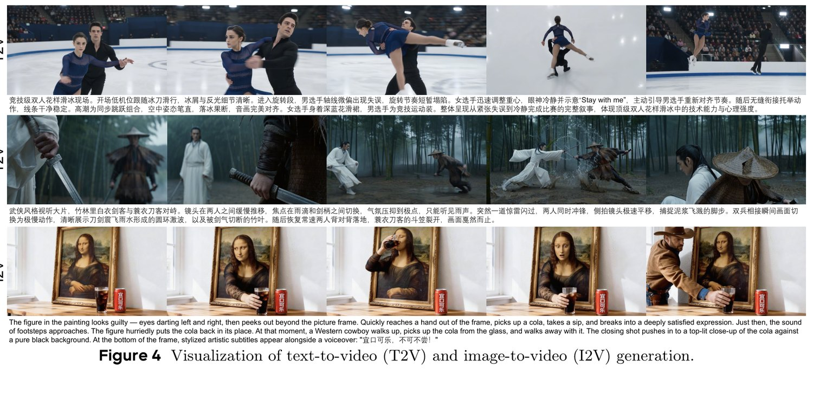

Advancing Video Generation for World Complexity —— 把「生成短片段」推进到「可控、原生、音画一体的多模态合成」
Seedance 2.0 是字节跳动 Seed 团队的原生多模态音视频联合生成模型（2026 年 2 月初在国内上线）。它用一套统一、高效、大规模的架构，同时接受 文本 / 图像 / 音频 / 视频 四种输入，原生输出带双声道音频的 4–15 秒、480p/720p 视频。
它把业界最全的一套多模态参考 + 编辑能力（主体、动作、风格、特效参考；编辑；续写延展；组合任务）收进同一个模型，并配套升级的评测基准 SeedVideoBench 2.0。在 Arena.AI 社区盲评中，文生视频与图生视频均排名 #1（Elo 1450 / 1449）；在 SeedVideoBench 2.0 的 T2V/I2V/R2V 各项维度上全面领先。
⚠️ 这是一份偏「能力 + 评测」的技术报告：详述模型能做什么、评测怎么设计、结果如何，但未公开内部网络结构与训练细节。本文中的架构示意图为依据原文文字描述自制，仅表达「输入→统一模型→音视频输出」的概念关系，不代表具体网络实现。
从「生成几秒钟、可控性有限的短视频片段」，走向「可控、原生、音画一体的多模态视频合成」。
视频生成已经成为数字内容基础设施的核心技术，被广泛用在专业制作与大众创作场景。Seed 团队此前积累了一整套生成式媒体能力——Seedance 视频系列、Seedream 图像生成与编辑系列、Seed-VL 多模态理解模型等——并已服务十亿级日活的产品生态。
但作者指出一个明确的范式转变：过去的视频模型擅长「短片段、弱控制」，而真实创作需要的是对多种控制信号原生支持的、稳定可控的视频合成。具体痛点有三：
四种模态进、音视频一体出；参考 / 编辑 / 续写共享同一个模型。
Seedance 2.0 的关键不是某个新模块，而是把过去分散的能力收敛进同一个原生模型。它能准确解读多模态输入内容，并按用户指令生成参考了指定元素（画面构图、镜头设计、运动节奏、声学特征）的输出，也能直接参考文字分镜（storyboard）。下面这张示意图按原文文字描述还原其概念关系：
围绕这个统一模型，报告强调了几项可观测的能力升级：
这套多模态参考与编辑能力同时支持单项任务（如仅做主体参考）和组合任务（如「用参考图替换视频主体」= 参考 + 编辑），从而适配从广告、影视特效到游戏动画、解说视频的多样化生产工作流。
报告把多模态任务正式拆成四组，并据此设计了细粒度评测。点开每组看子任务。
在 R2V 多模态任务支持对比中，Seedance 2.0 支持 22 类输入模态中的 20 类，是所有模型里最广的；剩下 2 类（主体「视听 + 音频参考」、视频「音频编辑」）所有模型都不支持。其中全部 3 种特效/创意参考 与 全部 4 种续写/延展 共 7 类任务，是竞品都做不到、仅 Seedance 2.0 独有的。对比：Kling 3 Omni 支持 9/22，Vidu Q2 Pro 13/22，Kling O1 10/22。
为了把模型推向生产部署，作者把评测框架升级到 SeedVideoBench 2.0——新增多模态、叙事质量、多语种覆盖。
新框架有两大变化：第一，建立多模态任务评测体系，正式定义「多模态任务遵循」与「生成一致性」，同时覆盖多模态设定下的基础生成质量（提示遵循、运动质量）；第二，把评测拆成客观与主观两条赛道——运动稳定性等客观指标走自动化流水线，美学等主观指标走专家盲评。此外还做了一项真实性研究：让评测者区分 Seedance 2.0 的输出与真实视频片段，结果反哺到美学调优。
多模态任务遵循（Multimodal Task Following）：度量在参考、编辑、延展场景下的指令遵循准确率，拆成数十种细粒度任务类型（主体身份、动作、风格等）。多数模型多模态覆盖有限，迫使用户靠试错探边界；这套指标把边界显式化。
一致性（Consistency）：捕捉生成内容与参考输入的贴合程度（参考对齐 Reference Alignment），以及编辑时未改动区域的保持程度（编辑一致性 Editing Consistency）。为此构建了覆盖主体 / 动作 / 场景 / 风格 / 音频的专门数据集。
镜头语言（Cinematographic language）：镜头是否服务于故事？评估镜头逻辑与表现力，关注冗余覆盖、越轴（违反 180° 规则）、景别不匹配、节奏不均等问题。
情节设计（Plot design）：模型能否把一个模糊或简短的提示，变成既连贯又有吸引力的内容？
风格美学（Stylistic aesthetics）：画面是否有经过考量的质感？涵盖布光、取景、构图、调色，以及角色、服装、道具、场景是否在美学上协调统一。
Arena（前身 LMArena）让用户对两个匿名模型的输出做并排盲选投票，产出反映大规模真人判断的 Elo 排名。不同于 FVD / CLIPScore 这类自动指标，它捕捉的是涵盖画质、运动真实感、时序连贯、提示遵循的整体人类偏好。
截至 2026 年 4 月 8 日，Dreamina Seedance 2.0 720p 在文生视频与图生视频榜单双双排名 #1。值得注意的是：它以 720p 分辨率，击败了运行在 1080p 的竞品——说明其在运动动态与视觉连贯上的提升，在感知上比单纯堆分辨率更显著。
在 Arena.AI 真人盲评与 SeedVideoBench 2.0 各项任务上，Seedance 2.0 全面领先——尤其在竞品普遍薄弱的音频维度上拉开差距。切换标签看不同任务。
在 720p 分辨率下登顶，且 T2V/I2V 的 Rank Spread 均为 1↔1，说明各评测维度上稳居榜首。I2V 领先第二名 grok-imagine-video-720p 共 29 分。
六个维度全部第一，是唯一每项都 > 3.4 的模型，平均较 Seedance 1.5 提升 0.86 分。音频是竞品最吃力的地方（多数 < 2.9），而 Seedance 2.0 三项音频维度全部 > 3.5。
六个维度全部第一（3.31–3.70），而没有任何竞品超过 3.18。呈两层格局：Seedance 2.0 在视频与音频上双双领先，竞品在音频上明显弱于视频。可用率在所有六项上均 > 87%。
参考生视频五个维度全部第一，全面超过 Kling 3 Omni、Kling O1、Vidu Q2 Pro。在主体外观与声音、动作、风格的参考对齐上优势明显，运动质量（生动度、物理合理性、结构稳定性）领先最大。
下面是原文 Figure 4 的生成可视化，最能体现「真实世界复杂度 + 跨场景适配」的综合能力。

一句话总结：这张图用「高难运动 + 风格化镜头 + 图生叙事」三类样本，直观印证了统一模型在运动真实感、镜头语言与多模态创意上的综合能力。
几个值得记住的取舍，以及作者自己点名的短板。
多主体一致性、文字还原准确性、复杂编辑任务仍有优化空间；视频延展（Extension）是其最弱的 R2V 任务——尽管支持任意上传视频延展（Veo 3.1 只能延展自己生成的视频），但延展质量明显落后 Veo 3.1（任务遵循 1.93 vs 2.78）。此外仍存在轻微形变、边缘情形的运动合理性、高频视觉噪声、音频失真，以及多说话人场景的口型同步错误。安全性贯穿模型迭代全周期，作者建立了结构化安全评估框架以持续评估与缓解风险。
“From the audio-video synchronous generation achieved by Seedance 1.5 to the unified multimodal audio-video joint generation framework established by Seedance 2.0, the Seedance series has consistently been built around a unified architecture, with a core commitment to high-fidelity reconstruction of real-world complexity.”
译：从 Seedance 1.5 实现的音视频同步生成，到 Seedance 2.0 建立的统一多模态音视频联合生成框架，Seedance 系列始终围绕一套统一架构构建，其核心承诺是对真实世界复杂度的高保真还原。
模型可在豆包、即梦与火山引擎体验，模型 ID 为 doubao-seedance-2-0-260128。更多细节见官方页面 seed.bytedance.com/seedance2_0 ↗。